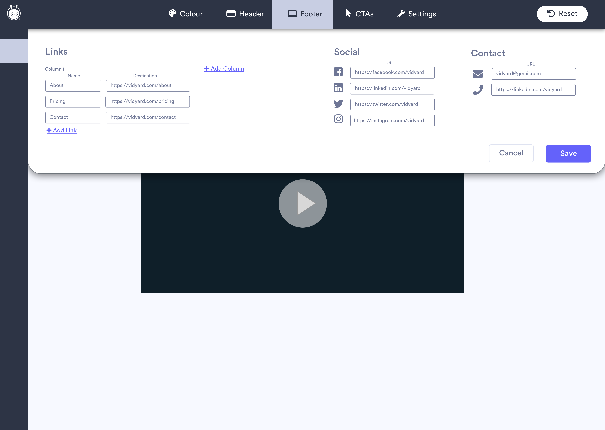

Vidyard
Internship | Product Manager | Summer 2018
Background.
Vidyard is a video company focused on allowing companies do more with video in their sales and marketing. Vidyard began as a video hosting and analytics platform for marketing and has recently expanded their reach to helping companies use videos in B2B sales prospecting using GoVideo.
Role.
At Vidyard, I worked as a Product Manager Intern on the GoVideo team. The small team of 3 product managers meant a lot of autonomy and ownership throughout my time there. I lead several projects that related to the our main goals for the year, some are: free user retention, increasing the free to enterprise gap (more value upgrading), and onboarding. This is how I worked day-to-day:
Research: Conducted formal user interviews and informal internal interviews to understand customer workflows and pain points. Used use case analysis to understand the market, then prioritized roadmap features based for lowest effort, highest value to highest effort, lowest value.
Design: Created user journey maps and ran design sprints and white boarding sessions to find the best solution to an identified problem, and working to match users’ mental maps. Conducted usability testing on low fidelity prototypes. Since we were a small team, many high fidelity designs were created within the product team.
Build: Outlined functional design and technical specifications alongside customer stories to align engineering team on common vision, purpose for building, as well as practical steps to achieve that. Ran regular check-in meetings, and provided necessary resources and iterations.
Refine: Launched projects and communicated updates internally, with stakeholders, and with customers. Analyzed data to measure against success criteria, find what’s not working, and go back to the drawing board to create new designs or workarounds.
Project: Branded Sharing Page Editing
Context
One of the projects I spent a good chunk of time on from research to the beginning of development is the redesign of the branded sharing page editing experience for an admin or an enterprise account. For some context: GoVideo is a product sales reps use to record prospecting videos and send to their customers. When their customers receive the video, they see it on a customized branded sharing page. The default Vidyard branded sharing page looks like this:
It would make sense that most companies who use GoVideo would want their sales reps to customize this page to reflect the company’s brand. However, Vidyard doesn’t make that easy to do.The component for admins to edit their branded sharing page is meant to give complete freedom over the design, meaning if users wanted to customize it, they would require knowledge of HTML/CSS. This project aimed to find a balance between giving users freedom to customize and not overloading them with options. We needed to figure out who we were building for and give them exactly what they need, not guess and give everyone everything.
Here is what the editing component looked like before the redesign:
Redesign
Since this component was a key part of enterprise admin workflows, it was important to try and keep the workflow as similar as possible and create notifications or workarounds for when it is not. It meant that it was important to launch it right the first time.
One of the themes of focus is consistency. In the old editing component, each subcomponent worked a different way. Colour is chosen using a colour picker, the header and footer are set using HTML/CSS, and brand logos are uploaded. The redesign allows for a more consistent editing experience across components by making each element customizable through the format of entering text in a text box. This means users can now expect the same experience of editing their header and the colour of their page, for example. It also reduces complexity by eliminating the need to have HTML/CSS knowledge to edit a header and footer.
A huge priority for me was having an accurate live preview for admins of what their customers would see. Currently, the on-page preview is a mockup and users need to preview in a new tab each time they want to see edits they’ve made. The new live preview as the user is editing improves consistency, reduces error and unexpected behaviour, and takes out many steps in the editing workflow.
The purple colour was chosen for accessibility, aesthetic, and to complement the universal semantic colours. Vidyard was long overdue for a redesign of the entire platform, so this acted as a kickstart to a larger project.
Here are parts of the final redesign, made in Sketch by me:

Learnings/Next Steps
Since Vidyard is a tool used by a wide range of companies, for the redesign of a component like this, it’s important to understand the root motivation for customer requests, and not let certain large customers become the PM. The next step is to test this design internally and with beta groups to see if users are behaving as expected and what functionality to add or kill.